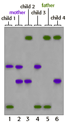

DNA Forensics Problem Set 2
Problem 10: Determining paternity
Results from a single locus probe DNA fingerprint analysis for a man and woman and their four children are shown in the illustration.
Which child, if any, can be excluded as being the biological offspring of the father?
Tutorial
Identify the mother's alleles| First, identify the mother's alleles in each of the four children. Once you've identified bands contributed by the mother, the remaining bands in the children's profiles must have been contributed by their father. |
| Next, compare the remaining bands in the children's profiles to the bands in the father's profile. If any of the remaining bands do not match one of the father's, then that child cannot be the father's biological offspring. |  |


The Biology Project
University of Arizona
Monday, April 7, 1997
Contact the Development Team
http://www.biology.arizona.edu
All contents copyright © 1996. All rights reserved.